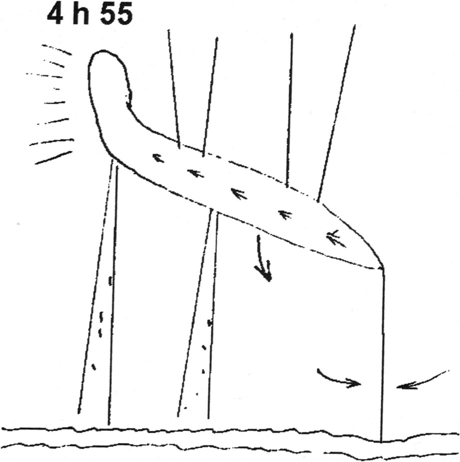

03vers minuit A Coudray-Saint Germer, Picardie,
des témoins dans leur voiture voient dans le ciel une forme pointue de couleur rouge-orangé. Sur leur parcours et
devant eux, cette forme se change en 1 énorme boule d'une très forte luminosité. Aucun bruit émanant de cet objet
statique et en suspension dans l'air ne sera perçu. Pris de peur les témoins vont rebrousser chemin Un des témoins avait déjà fait cette observation 1 mois plus tôtGEPAN: PAN classé D.
Dessin réprésentant l'objet observé par V. Gotsiridsé le 7

Un Tupolev 134 effectue la ligne régulière Tbilissi (Géorgie)-Tallin (Estonie). Non
loin de Minsk, le pilote remarque dans le ciel un engin jaunâtre d'où sortent 3 rayons de lumière si puissants
qu'ils éclairent le sol. L'intensité des couleurs et la forme des rayons sont différentes. Tous les rayons sont d'un
bleu-blanc, leur lumière est semblable à celle de lampes à quartz très brillantes. Un de ces faisceaux se braque
brièvement sur l'avion. Peu après, le phénomène lumineux qui change plusieurs fois de forme et devient un avion
nuageux sans ailes et à queue biseautée escorte alors le Tupolev. Les radars de Vilnus et de Riga ont détecté un
second écho à côté de l'avion de Tallin tandis que le contrôleur de Minsk a vu le gigantesque avion nuageux ;
il en signale les coordonnées à un 2ème Tupolev qui arrive en sens inverse et lui donne l'ordre de s'en approcher.
Le pilote obéit, mais l'observation visuelle de l'engin ne sera possible qu'à 15 km environ. A ce moment, l'ovni a
la forme d'un cigare ; il s'immobilise, dirige à nouveau vers le sol ses rayons lumineux dont l'un rétrécit et vient
éclairer pendant 3 ou 4 s le second Tupolev. Après d'inconcevables évolutions, l'engin reprend son escorte du 1er
avion. Cette aventure ne laisse pas l'équipage indemne. L'Institut de Recherches de Thérapie Expérimentale du
Ministère de la Santé de Géorgie reconnaitra qu'à la suite d'une rencontre avec un engin d'un type nouveau, une
irradiation électromagnétique inconnue a affecté la rate du commandant de bord, V. Gotsiridzé (qui mourra d'un
myélome multiple), ainsi que le cerveau et le coeur du copilote, Y. Kabatchinokov. Une hôtesse de l'air qui se
trouvait dans la cabine de pilotage au moment du rayonnement
fut également irradiée. Ce Tupolev se disolqua en vol (avec un autre équipage) peu après sa rencontre rapprochée
sans que la surveillance aérienne gouvernementale ne puisse expliquer cette catastrophe.
A Comines (Nord-Pas de Calais), plusieurs témoins voient
dans le ciel 1 lueur orangée de la grosseur et de la forme d'un ballon de rugby. Au cours de l'observation cette
lueur se scinde en 2 parties ovoïdes. Puis 1 des 2 parties beaucoup plus sombre contourne plusieurs fois la 1ère
dans le sens des aiguilles d'une montre. Les observations dureront entre 45 s et 3 mn GEPAN: PAN classé D.